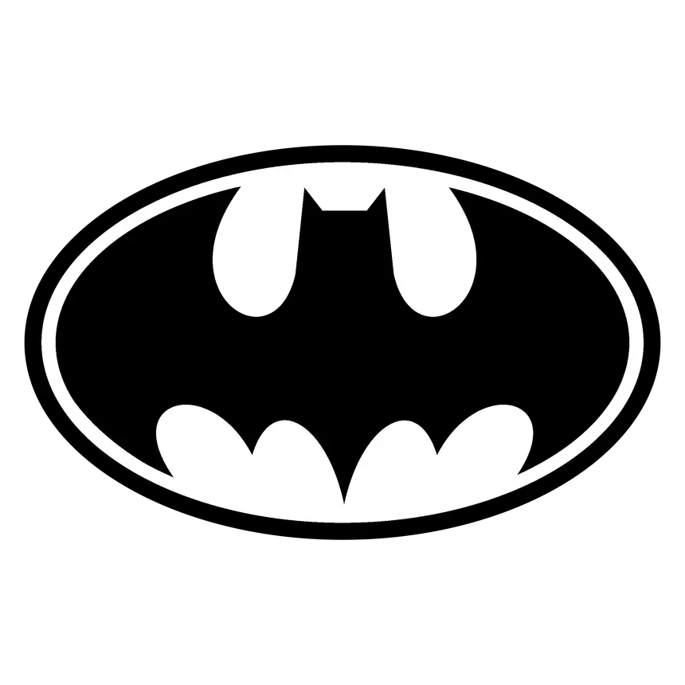
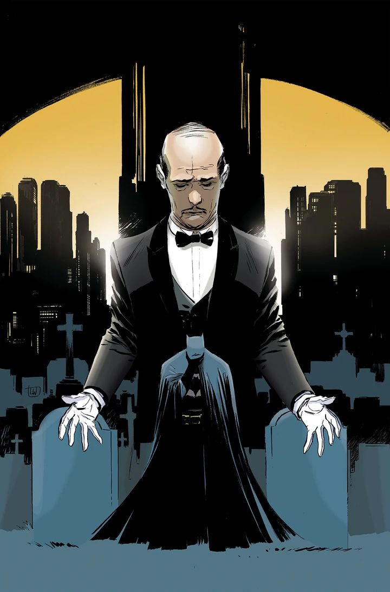
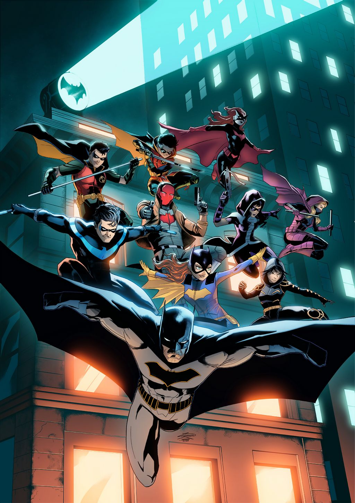
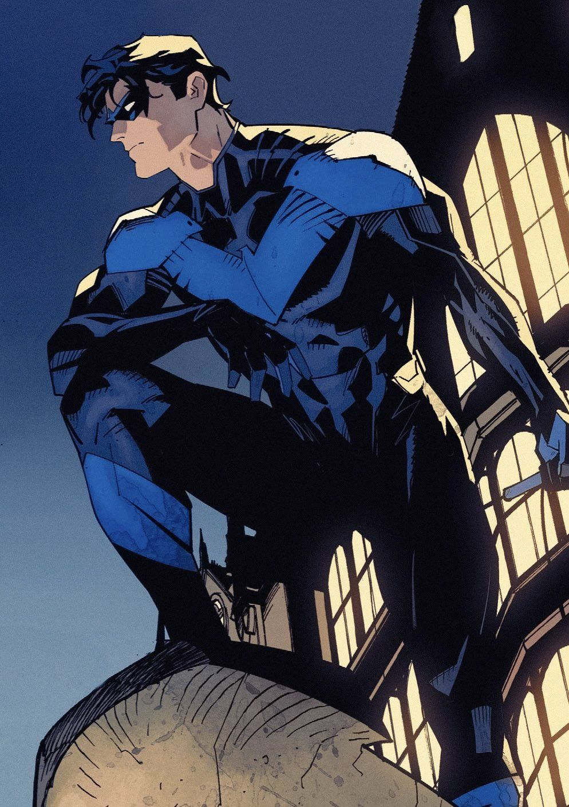

Bruce
Wayne
Multimillonario, dueño de Wayne Enterprises y filántropo. Usa su fortuna, su intelecto y años de entrenamiento para librar una guerra contra el crimen que empezó la noche en que perdió a sus padres.
“SOY LA NOCHE.”

EL PROTECTOR DE GOTHAM CITY
Gotham duerme.
Él vigila desde las sombras.
De día, el heredero más famoso de Gotham. De noche, la sombra que temen sus criminales.
Multimillonario, dueño de Wayne Enterprises y filántropo. Usa su fortuna, su intelecto y años de entrenamiento para librar una guerra contra el crimen que empezó la noche en que perdió a sus padres.
Cuando Bruce tenía ocho años, un ladrón asesinó a sus padres, Thomas y Martha Wayne, a la salida de un cine. Esa noche juró que dedicaría su vida a que nadie más sufriera lo mismo.
Pasó años recorriendo el mundo para entrenar su cuerpo y su mente. De regreso en Gotham, un murciélago que entró por la ventana le dio la respuesta: el símbolo que usaría para sembrar miedo entre los criminales.
“Los criminales son supersticiosos y cobardes. Tengo que convertirme en algo que les inspire terror.”
Todo lo que tiene lo ganó con disciplina, ingenio y preparación.
Analiza escenas, rastrea pistas y deduce lo que otros no ven. Así resuelve los casos de Gotham.
Domina decenas de estilos de combate y entrena su cuerpo al límite de lo humano.
Batarangs, gancho, Batimóvil y la Baticomputadora: herramientas diseñadas para cada situación.
Siempre tiene un plan, y un plan de respaldo. Incluso para enfrentar a sus propios aliados.
No mata. Su código le impide quitar una vida, incluso la de sus peores enemigos, y eso hace que la pelea contra el Joker nunca termine. Además, bajo la capa sigue siendo humano: se lastima, se cansa y carga con el peso de cada persona que no pudo salvar.

Mayordomo de la familia Wayne y el padre que Bruce necesitó después de aquella noche. Ex actor y ex agente de inteligencia británico, cura sus heridas, mantiene la Baticueva y es la única voz que se anima a decirle que está equivocado.
“¿Por qué nos caemos, señor? Para aprender a levantarnos.”
Batman empezó solo, pero con los años reunió a un equipo que comparte su misión.

Cuatro jóvenes llevaron el nombre de Robin junto a Batman. Cada uno dejó su marca.


01Acróbata de circo y el primer Robin. Al crecer se independizó como Nightwing, protector de Blüdhaven.
 02
02
El Robin rebelde, asesinado por el Joker. Volvió como Red Hood, dispuesto a cruzar la línea que Batman nunca cruza.
 03
03
Descubrió solo la identidad de Batman y se ofreció a ser Robin. Es el gran detective de la nueva generación.
 04
04
Hijo de Bruce y Talia al Ghul, criado por la Liga de Asesinos. Aprende a ser héroe como el Robin más joven e impulsivo.
Batman no tiene poderes ni anillos mágicos. Es una persona que convirtió su peor noche en una promesa, y que cada vez que se enciende la Batiseñal vuelve a cumplirla.
CONSULTAR PERFIL OFICIAL DE DC ↗ VOLVER AL INICIO ↑